<html lang="en"></html><head><meta charset="UTF-8"/><title>Микоцин</title><link rel="stylesheet" type="text/css" href="style.css"/><link href="https://fonts.googleapis.com/css?family=Roboto:400,400i,700,900&amp;display=swap" rel="stylesheet"/></head><body><section class="cover_layout"><div class="cover"><div class="container"><div class="cover_header"><div class="header_logo"><div class="logo_img"></div><p class="logo_text">Микоцин</p></div><ul class="header_list"><li class="list_item"><div class="item_icon"> </div><p class="item_text">№1 Для избавления от любого грибка </p></li><li class="list_item"><div class="item_icon"></div><p class="item_text">Рекомендован дерматологами</p></li><li class="list_item"><div class="item_icon"></div><p class="item_text">+13000 довольных клиентов за 2018 год</p></li></ul></div><div class="cover_main"><div class="info_product"><div class="product_img">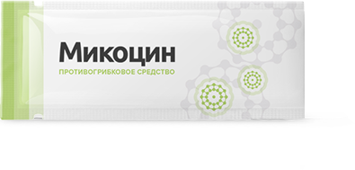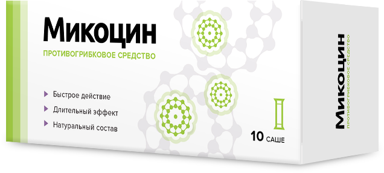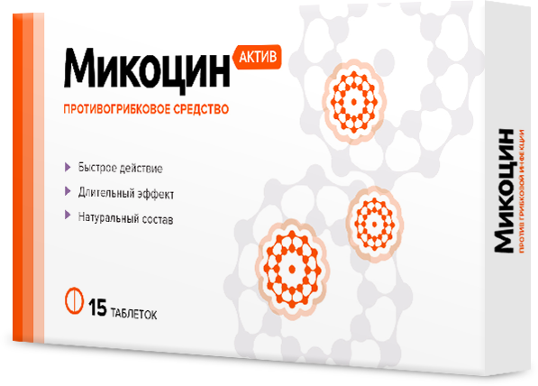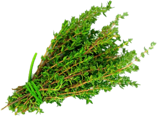<div class="product_price product_price-color">299₽</div><div class="product_price">299₽    </div><div class="circle_decor"> <div class="decor_circle"></div></div>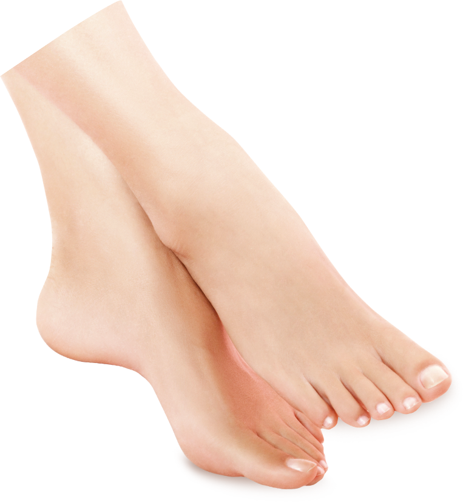</div><div class="product_info"><h1 class="info_h1">Комплексное избавление от грибка —<br> <span class='info_h1-small'><span class='line_red-big'>изнутри</span> и <span class='line_green-big'>снаружи</span></span></h1><ul class="info_list"><li class="list_item"><div class="item_icon">2в1</div><p class="item_text">Комплекс Микоцин <span class='bold'>устраняет зуд, запах,</span> и возвращает эстетичный вид ногтям</p></li><li class="list_item"><div class="item_icon">1</div><p class="item_text"><span class='bold line_red-small'>Таблетки</span> Микоцин <span class='bold'>уничтожают все виды грибка</span> на ногтях и коже</p></li><li class="list_item"><div class="item_icon">2</div><p class="item_text"><span class='bold line_green-small'>Гель</span> Микоцин <span>восстанавливает кожу</span> и создает на ней <span>защитный барьер</span></p></li></ul></div><div class="product_form"><div class="form_container"><div class="form_delivery"><p class="delivery_text">Бесплатно</p></div><h2 class="form_title">Успейте заказать со скидкой<br> <span class='color_date'>до 11.01.2020</span></h2><div class="form_price"><div class="price_old"><div class="price_name-light">старая цена</div><div class="price_text">918 <span class='price_icon'>₽</span></div></div><div class="price_new"><div class="price_name">новая цена</div><div class="price_text-bold">459 ₽</div></div></div><div class="form"><div class="form_name_layout"><input class="form_name" type="text" placeholder="Имя"/></div><div class="form_tel_layout"><input class="form_tel" type="text" placeholder="Телефон"/></div><button class="form_button" type="submit">Заказать<br> <span class='button_text-small'>со скидкой</span></button></div><div class="form_notice">Осталось <span class='color_text'>10</span> упаковок со скидкой </div><div class="form_protect"> <div class="protect_text">Ваши данные защищены</div></div></div></div></div></div></div></div></section><section class="problems"><div class="problems_layout"><div class="header"><h1 class="header_h1">Грибок – это опасная инфекция</h1><h2 class="header_h2">которая угрожает вам и ведь с каждым днем грибок приводит к:</h2></div><div class="problem_card"><div class="card_container"><div class="card_number" style="background:#ec9a6a;">1</div><div class="card_header">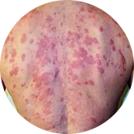<div class="card_title">Сложным формам аллергии</div></div><div class="card_text">Может появится сильная реакция на привычную пищу, одежду, средства гигиены</div></div><div class="card_container"><div class="card_number" style="background:#e47643;">2</div><div class="card_header">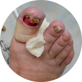<div class="card_title">Потере ногтя и ампутации пальца</div></div><div class="card_text">После полного разрушения ногтя грибок распространяется на палец, что приводит к его ампутации </div></div><div class="card_container"><div class="card_number" style="background:#ec5b19;">3</div><div class="card_header">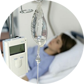<div class="card_title">Тяжелому поражению внутренних органов</div></div><div class="card_text">Может привести к повреждениям мозга, слепоте, отказу печени, почек и сердца</div></div></div><div class="problem_notice"><span class='bold'>Статистика</span>: каждые 60 секунд врачи диагностируют опасные поражения внутренних органов, вызванные грибком, у 1-го пациента</div></div></section><section class="inefficient"><div class="inefficient_layout"><div class="header"><h1 class="header_h1">Почему большинство средств против грибка малоэффективны</h1><h2 class="header_h2"></h2></div><div class="inefficient_card_layout"><div class="card_layout"><div class="card_header"><h2 class="card_title">Чудо-средства</h2><p class="card_title-small">Обещают, что избавят от грибка меньше, чем за месяц, хотя это невозможно.</p><div class="card_img_container"></div></div><div class="card_main"><h2 class="card_title card_title-color">Но</h2><div class="card_text">Ноготь – это роговой слой кожи. Он не имеет живых клеток. Часть ногтя, которая уже поражена грибком, не может выздороветь дополного его отрастания. Единственный способ вылечить грибок – подавлять его распространение все время, пока ноготь не отрастет заново. Для этого требуется 4-6 месяцев.</div></div></div><div class="card_layout"><div class="card_header"><h2 class="card_title">Наружные средства</h2><p class="card_title-small">Способны устранить внешние проявления грибка. (кремы, лаки, пластыри)</p><div class="card_img_container"></div></div><div class="card_main"><h2 class="card_title card_title-color">Но</h2><div class="card_text">Очаг заражения находится под ногтевой пластиной, а наружные средства не способны его достичь - они действуют только на верхнем слое ногтя, поэтому не способны избавить от грибка.Для повышения их эффективности рекомендуется спиливать ноготь полностью, но это больно, некрасиво и совершенно не дает гарантий выздоровления.</div></div></div><div class="card_layout"><div class="card_header"><h2 class="card_title">Внутренние средства</h2><p class="card_title-small">Убивают грибковую инфекцию в организме. (таблетки, саше, капли)</p><div class="card_img_container"></div></div><div class="card_main"><h2 class="card_title card_title-color">Но</h2><div class="card_text">Могут подействовать только при длительном использовании (3 - 4 месяца).За это время внутренние средства в 93% случаев наносят серьезный ущерб печени, вызывают сыпь, отеки, диарею, рвоту. К тому же, каждое средство эффективно только против одной группы грибка из 4000 видов.</div></div></div></div><div class="inefficient_conclusion"><div class="conclusion_header">ВЫВОД:</div><div class="conclusion_text">Даже если вы используете наружные и внутренние средства одновременно, это <span class='bold'>не гарантируетизбавления от грибка</span>: они могут конфликтовать между собой по составу и блокировать действие
друг друга или быть неэффективными против вашего типа грибка.</div></div></div></section><section class="efficiency"><div class="efficiency_layout"><div class="header"><h1 class="header_h1">Почему таблетки Микоцин от грибка так эффективны?</h1><h2 class="header_h2">Другие средвства не дают полную защиту от грибковых инфекций и могут быть опасны</h2></div><div class="efficiency_card_layout"><div class="efficiency_card_container" style="border:6px solid#f64d01;"><div class="efficiency_card_design" style="border:6px solid#f64d01;"></div><div class="efficiency_card_header">Кремы и мази</div><div class="efficiency_card_text">Не лечат грибок, потому что не проникают в ногтевую пластину. Только временно избавляют от симптомов инфекций. Могут вызвать сильную аллергию и раздражения на коже.</div></div><div class="efficiency_card_container" style="border:6px solid#f64d01;"><div class="efficiency_card_design" style="border:6px solid#f64d01;"></div><div class="efficiency_card_header">Народные методы</div><div class="efficiency_card_text">Помогают только в редких случаях. Могут причинить вред коже и ногтям. Не предотвращают повторные заражения грибком.</div></div><div class="efficiency_card_container" style="border:6px solid#62bd1f;"><div class="efficiency_card_design" style="border:6px solid#62bd1f;"></div>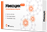<div class="efficiency_card_header">Таблетки</div><div class="efficiency_card_text">Действуют против всех видов грибков. Быстро снимают неприятные симптомы и уничтожают инфекцию изнутри вне зависимости от области заражения грибком. Надолго защищают от повторных заражений.</div></div></div><div class="efficiency_conclusion"><div class="conclusion_text">Зачем лечить сложнее, дольше и дороже, если есть <span class='color_date'>Микоцин?</span></div></div></div></section><section class="instruction"><div class="instruction_layout"><div class="header"><h1 class="header_h1">Как применять Микоцин</h1><h2 class="header_h2"></h2></div><div class="instruction_main"><div class="instruction_content">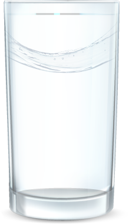</div><div class="instruction_content"><div class="step_item"><div class="step_pic_container"></div><div class="step_text">Принимать по одной таблетке утром и вечером</div></div><div class="step_item"><div class="step_pic_container"></div><div class="step_text">Запивать стаканом воды</div></div><div class="step_item"><div class="step_pic_container"></div><div class="step_text">Курс - 30 дней</div></div></div></div></div></section></body>